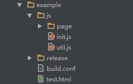
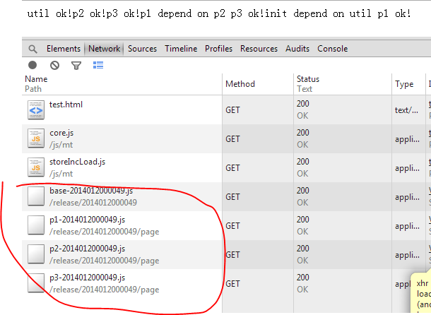

MT
无更新 不下载！
无更新 不下载！
MT是手机腾讯网前端团队开发维护的一个专注于移动端的js模块管理框架。
github, npm
$ npm install mtbuild -gMT项目架构一般如下图所示，release文件夹存放本地打包生成的内容，build.conf为打包配置文件。
AMD...
define('p1', ['p2', 'p3'], function (p2, p3) {
var o = {
k: 'v'
};
return o;
});页面配置：参考实例，在test.html中会存在一段单独的script标签，示意加载及打包配置。
打包配置：参考实例，创建一个build.conf的配置文件
{
'./release/{pv}/base-{fv}.js': {
files: ['./js/init.js','./js/util.js']
},
'./release/{pv}/page/p1-{fv}.js': {
files: ['./js/page/p1.js']
},
'./release/{pv}/page/p2-{fv}.js': {
files: ['./js/page/p2.js']
},
'./release/{pv}/page/p3-{fv}.js': {
files: ['./js/page/p3.js']
}
}
打开命令行工具，切换到项目目录下，执行命令：（第一个参数为页面配置文件路径，第二个为打包配置文件路径）
$mtbuild test.html build.conf看到下图提示证明打包成功：（启动增量服务可忽略incResult的结果）

可以使用demo目录里的一个用nodejs 写的storeincServer
node storeincServer
打开chrome(必须支持localstorage),输入地址:http://localhost:6600/test.html,可以看到请求的是全量的js
本地存储里的内容是49版本的：

修改demo里的几个js内容，然后重新打包:
$mtbuild test.html build.conf打开chrome(必须支持localstorage),输入地址:http://localhost:6600/test.html,这时候可以看到请求的内容是增量的:

本地存储里的内容是50版本的：

查看网络请求，发现请求的内容是你本次修改的一些内容：

说明增量更新已经起了作用，就是这么简单。具体原理可以看后面列车的增量更新算法设计。
demo里的示例增量文件计算是靠storeincserver来做的，如果你没法控制静态资源服务器， 其实你可以用mtbuild来生成静态增量更新文件，但是前台的loader程序会根据用户上次版本和本次版本相差为1的情况下才走增量更新，并且你需要配置proxy为false
storeInc:{
'store': true, // 使用本地存储
'inc': true, // 使用增量更新
'proxy':false,//是否使用代理
'debug': false // 调试模式
},除了nodejs版本的storeincserver,我们还提供了java,php版本的增量更新计算服务，使用方法见文档列表
如果你之前用了seajs或者用requirejs,现在不想改成mt,我们也提供了这两个模块管理器的增量更新插件，代码在js里的seajs和requirejs目录里面，使用方法参看后面的文档列表
如果你觉得增量更新意义不大，但是觉得我们的mt模块管理器还不错想用，那么你可以直接使用core.js，不引入storeincload.js即可！
如果你觉得我们这里的增量更新不错，但是不想使用mt,也不想使用seajs,requirejs这些东西，只是想在自己的项目里面加入增量更新功能，那么请直接使用js/makemerge文件夹里的makein.js,merge.js。 其中makeinc.js是用来计算两个文件的增量的，merge.js则是用来根据增量文件和原文件合并成新版文件的